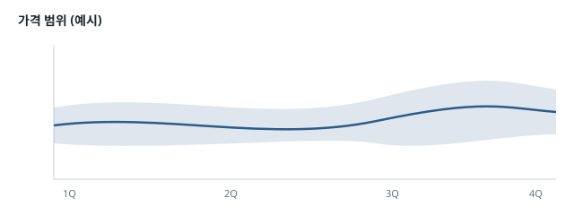

요약
이 문서는 자기 스타일(CSS)을 가지고 있어 그 모양 그대로 보입니다. 스크립트는 돌지 않으므로, 스크립트로 그리는 차트는 보이지 않습니다.
아래 버튼을 눌러도 아무 일도 일어나지 않아야 합니다 (스크립트를 막음).
분기별 가격
| 품목 | 1분기 | 2분기 | 비고 |
|---|---|---|---|
| 구리 | $8,950 | $9,420 | 재고 감소 |
| 코발트 | $27,300 | $26,100 | 공급 과잉 |
| 리튬 | $11,800 | $12,600 | 배터리 수요 |
그림
상대경로 그림은 문서 위치를 기준으로 찾습니다.

링크
- Markdown 문서의 표 절: 뷰어 안에서 열립니다
- 스타일이 없는 html 문서: 뷰어 안에서 열립니다
- 이 문서의 가격 표: 같은 문서 안
- CommonMark 명세: 기본 브라우저로 엽니다